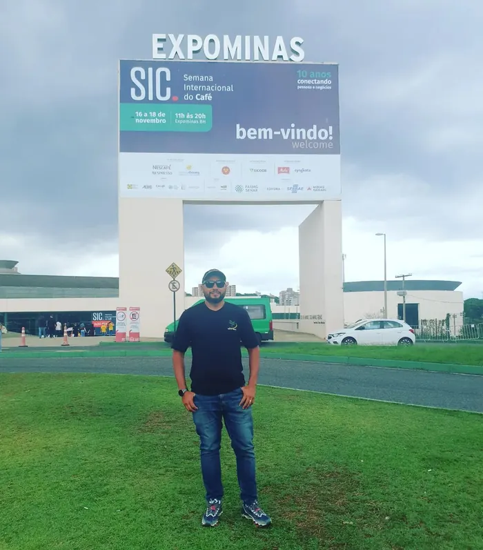
Giovani Gomes
"Não fui eu que ordenei a você? Seja forte e corajoso! Não se apavore nem desanime, pois o Senhor, o seu Deus, estará com você por onde você andar." Josué 1:9
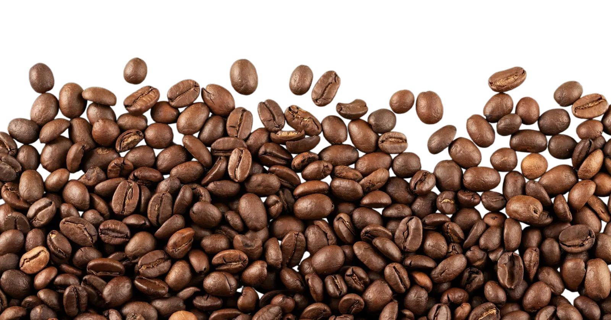
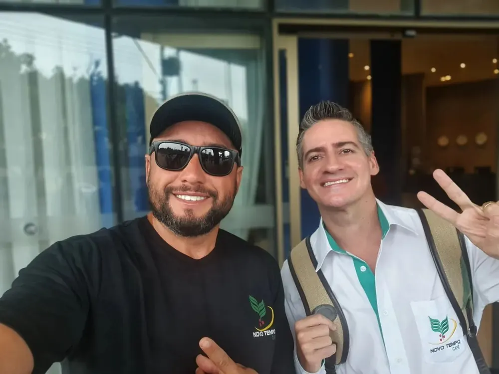
Valores: Excelência, Transparência, integridade, responsabilidade, inovação e trabalho em equipe.
Missão: Proporcionar soluções inovadoras e personalizadas para o crescimento dos negócios.
Visão: Ser líder de mercado, expandir serviços e promover desenvolvimento sustentável do setor cafeeiro.
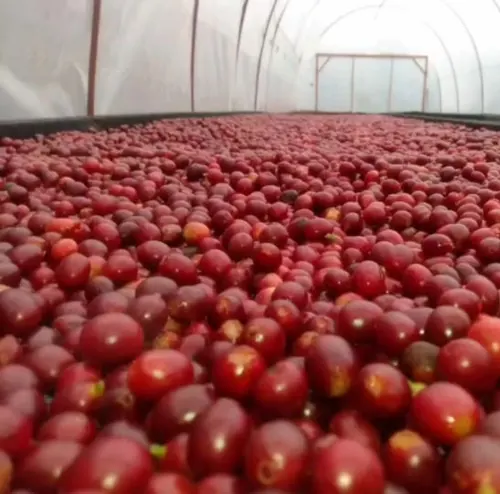
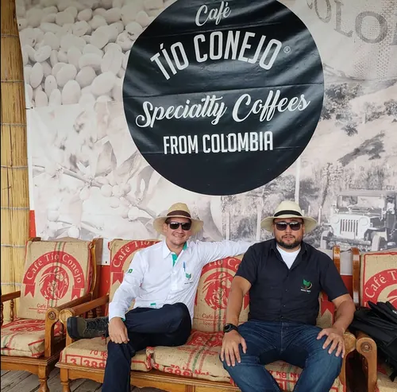
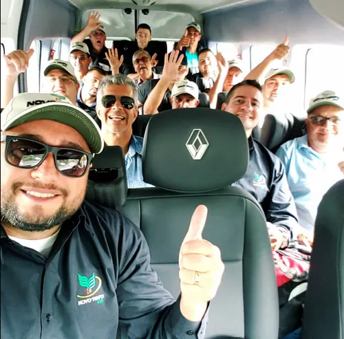
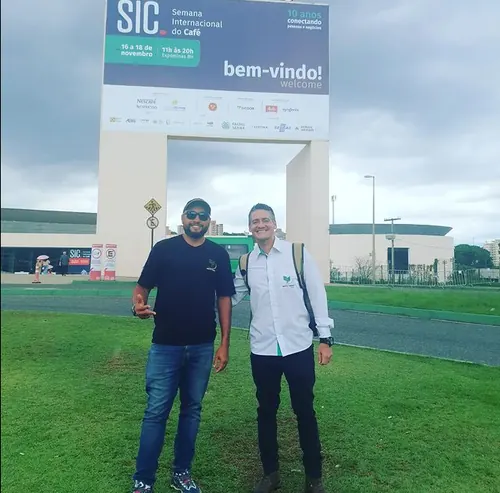
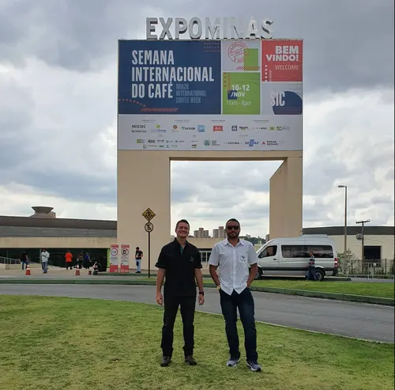
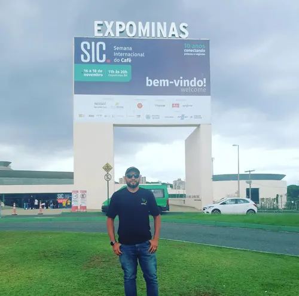
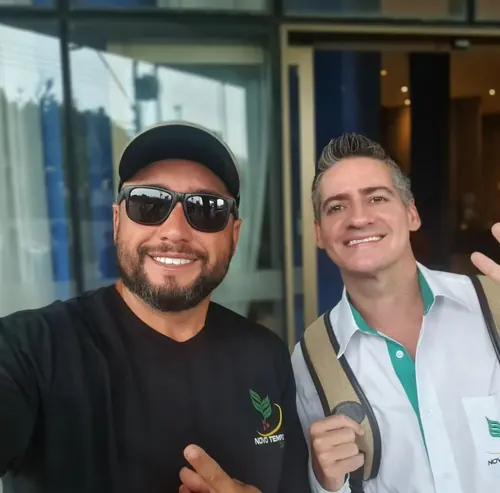
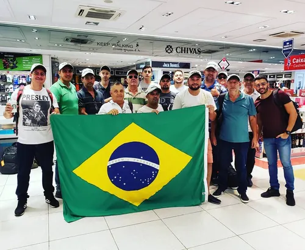

"Não fui eu que ordenei a você? Seja forte e corajoso! Não se apavore nem desanime, pois o Senhor, o seu Deus, estará com você por onde você andar." Josué 1:9
“Busquem, pois, em primeiro lugar o Reino de Deus e a sua justiça, e todas essas coisas lhes serão acrescentadas.” Mateus 6:33